Mở đầu buổi grooming Stablecoin portal
Ai nói / nguồn: Eric, Minh Nguyen Hoang, Thanh Son Le, Phuong, ATZ
Feedback chi tiết
Buổi họp Zoom/Meet (~51 phút) để team **collect thoughts** trên các flow hUSD portal sau thread Slack từ BE (Ducke) và design (Kevin). Minh share màn hình — walkthrough portal GitHub Pages và đối chiếu feedback Slack.
Kết luận
Mục tiêu buổi: làm rõ design grooming trước khi implement; không chốt BE trong call này nhưng ghi nhận câu hỏi mở cho PM/BE.
Proof of Reserve — liquidity & reserve backing
Ai nói / nguồn: Minh Nguyen Hoang
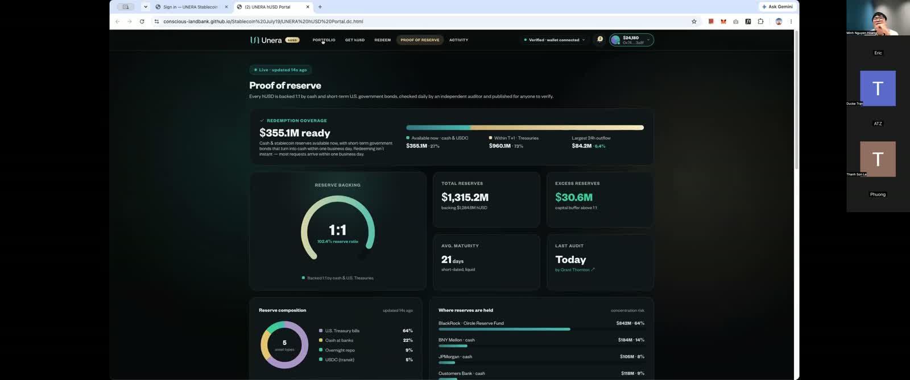
Feedback chi tiết
Demo **`UNERA hUSD Portal`** tab **Proof of Reserve**: headline **$355.1M ready**, thanh liquidity (Available now vs T+1 Treasuries), gauge **1:1 / 102.4% reserve ratio**, total reserves **$1,314M**, excess reserves, Grant Thornton audit. Composition donut (Treasury bills, cash, repo, USDC transit) và **Where reserves are held** (BlackRock, BNY Mellon, JPMorgan, v.v.).
Kết luận
Trang minh bạch dự trữ — giữ narrative 1:1 + audit; team dùng làm reference copy/IA cho production portal.
Your linked wallets & nav account menu
Ai nói / nguồn: Minh Nguyen Hoang
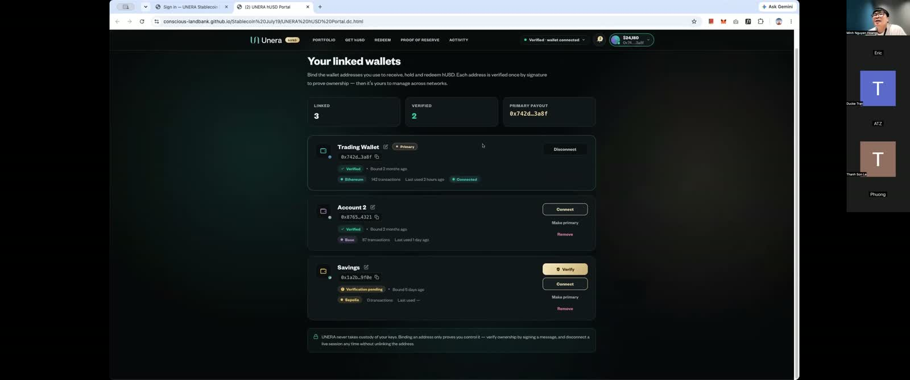
Feedback chi tiết
Màn **Your linked wallets**: bind address nhận/giữ/redeem hUSD; stats Linked / Verified / Primary payout. Ví Trading (Verified, Ethereum), Account 2 (Base), Savings (**Verification pending** + nút Verify). Dropdown account: network switcher (Ethereum, Base, Sepolia), **Simulate unsupported network**, Manage wallets / Payment methods / Bank accounts.
Kết luận
Multi-wallet + verify-by-signature pattern được demo; pending verification state cần copy/CTA rõ trước khi user Get/Redeem.
Proof of Reserve — charts & contract proof
Ai nói / nguồn: Minh Nguyen Hoang
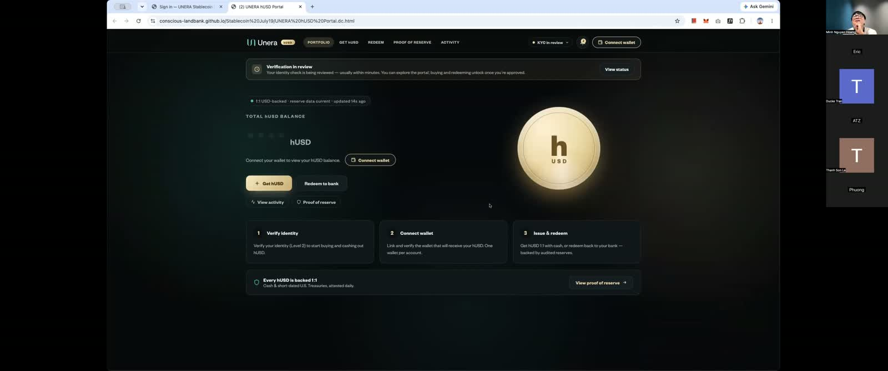
Feedback chi tiết
Scroll PoR: **Maturity ladder**, **30-day circulating supply** (+2.1%), **Reserve yield** split Operations vs Humanity Centres, **Proof & audit reports** với contract **hUSD** address + daily reserve PDF.
Kết luận
Marketing/trust layer đầy đủ — FE chỉ presentation; số liệu mock trên prototype.
Portfolio — Kevin Slack: status bar & wallet row
Ai nói / nguồn: Kevin, Minh Nguyen Hoang
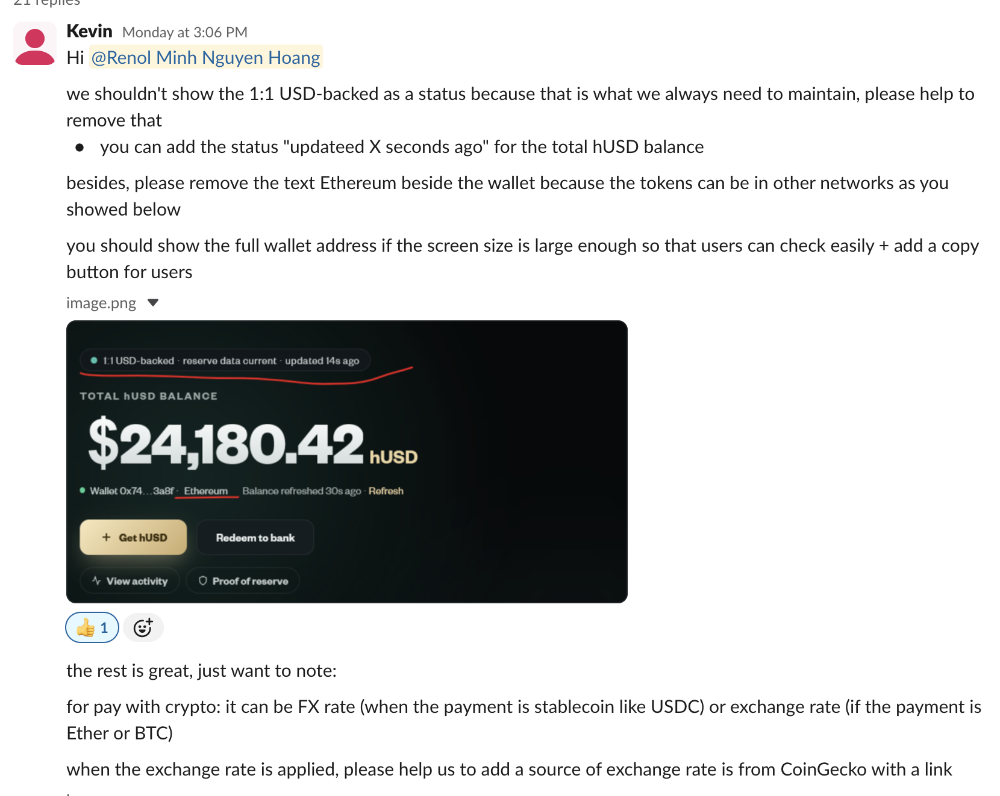
Feedback chi tiết
**Kevin → @Renol:** (1) **Remove** status **1:1 USD-backed** (luôn đúng, không cần hiển thị như status). (2) **Add** “updated X seconds ago” cho **total hUSD balance**. (3) **Remove** label **Ethereum** cạnh wallet (token đa chain). (4) Desktop: **full wallet address** + **Copy**. (5) Pay crypto: dùng **FX rate** (stablecoin) vs **exchange rate** (ETH/BTC); khi exchange rate → note **source CoinGecko** + hyperlink.
Kết luận
Design action: chỉnh hero portfolio — bỏ 1:1 chip top, thêm freshness trên balance, đa chain copy address, terminology rates theo asset type.
Portfolio live demo (trước chỉnh Kevin)
Ai nói / nguồn: Minh Nguyen Hoang
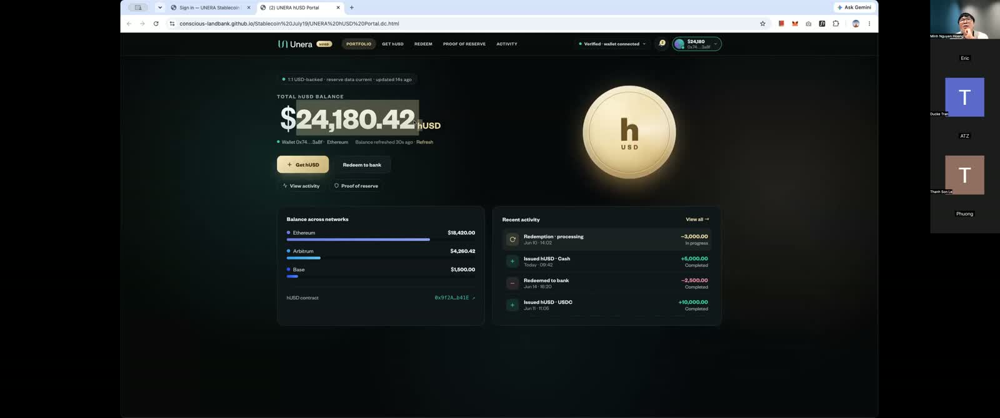
Feedback chi tiết
Live **Portfolio**: **TOTAL hUSD BALANCE $24,180.42**, chip `1:1 USD-backed · reserve data current · updated 14s ago`, wallet `0x74…3a8f · Ethereum`, **Get hUSD** / **Redeem to bank**, **Balance across networks** (ETH/Arbitrum/Base), **Recent activity**.
Kết luận
Đối chiếu trực tipe với feedback Kevin — các điểm đỏ trên mock Slack map đúng UI hiện tại.
Eric Slack — final portal review request
Ai nói / nguồn: Eric
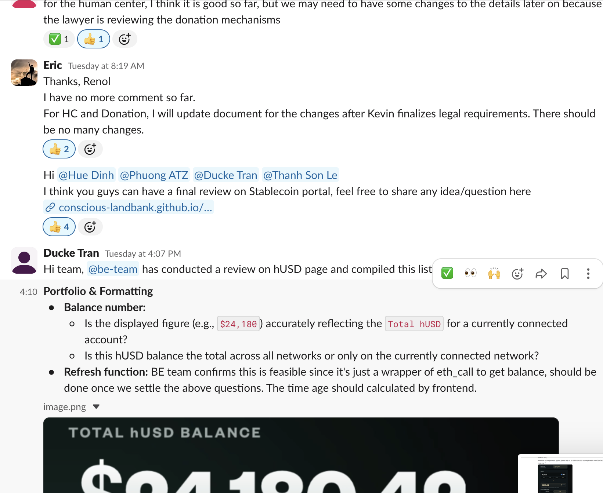
Feedback chi tiết
**Eric (Tue 8:19):** Nhờ @Hue @Phuong @Ducke @Thanh Son **final review Stablecoin portal** (link GitHub Pages). HC/Donation docs Eric update sau khi Kevin chốt legal.
Kết luận
Buổi 24 Jul là follow-up grooming Eric đề xuất (Thu/Fri) sau thread này.
BE review — Balance number & refresh (Ducke)
Ai nói / nguồn: Ducke Tran
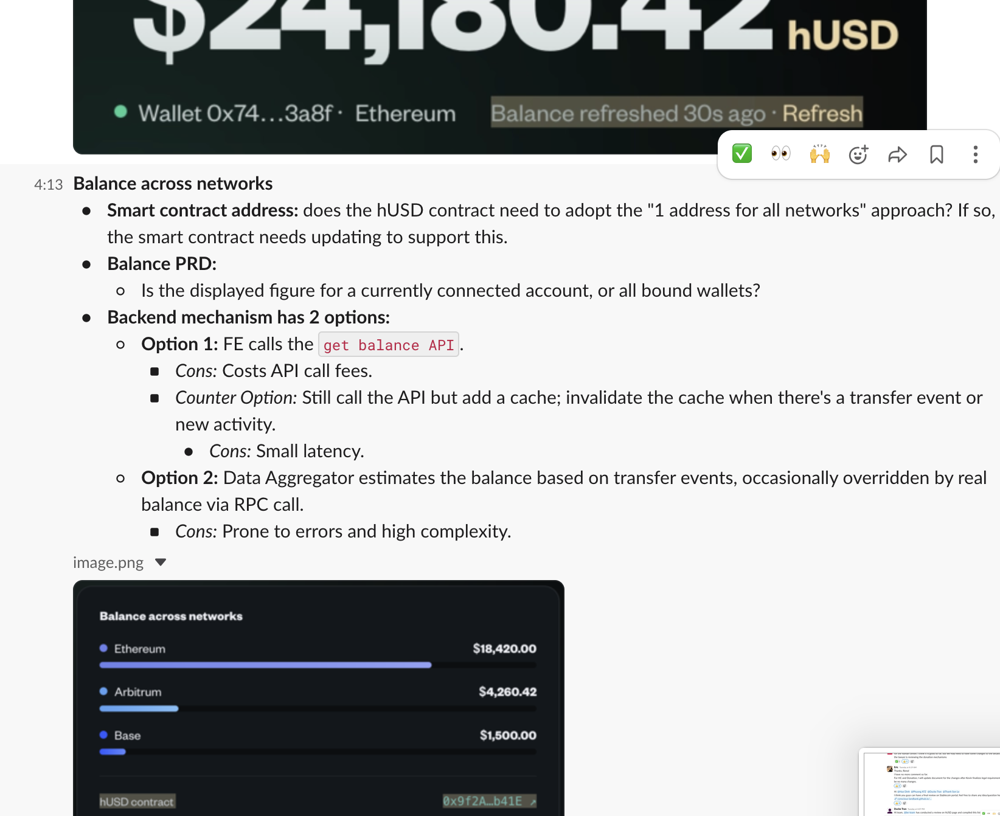
Feedback chi tiết
**@be-team (Ducke):** Balance `$24,180` có phản ánh đúng **Total hUSD** wallet đang connect? Tổng **mọi network** hay chỉ network hiện tại? **Refresh** feasible (wrapper `eth_call`); implement sau khi thống nhất scope balance. **Time age tính ở FE.**
Kết luận
Mở câu hỏi PRD: single network vs aggregated — chưa chốt trong video; FE có thể mock cả hai state.
Balance across networks — contract & BE options
Ai nói / nguồn: Ducke Tran

Feedback chi tiết
**Smart contract:** 1 address all networks? **PRD:** balance = connected account hay **all bound wallets**? **BE option 1:** FE gọi get-balance API (phí, cache invalidate on transfer). **Option 2:** aggregator từ events + occasional RPC override (phức tạp, dễ lệch). UI mock: breakdown ETH **$18,420** + Arbitrum **$4,260.42** + Base **$1,500** = total.
Kết luận
Cần PM/BE quyết định nguồn số liệu trước khi polish refresh UX; design giữ component breakdown.
Sign up / Sign in — PRD gaps
Ai nói / nguồn: Ducke Tran, Minh Nguyen Hoang
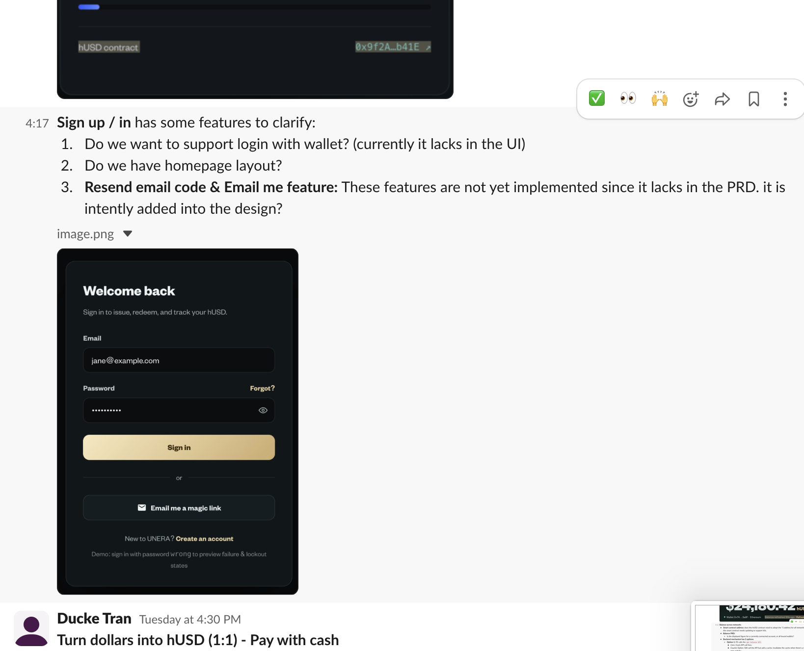
Feedback chi tiết
Clarify: (1) **Login with wallet** — chưa có UI, có muốn support? (2) **Homepage layout** — có spec không? (3) **Resend email code** & **Email me magic link** — chưa trong PRD; design cố ý thêm? Demo **`ui_kits/auth/index.html`**: Welcome back, password, magic link, Create account.
Kết luận
Align PRD vs design auth kit trước sprint; wallet-login và homepage là open questions.
Get hUSD — Pay with cash: fee collection (Ducke)
Ai nói / nguồn: Ducke Tran
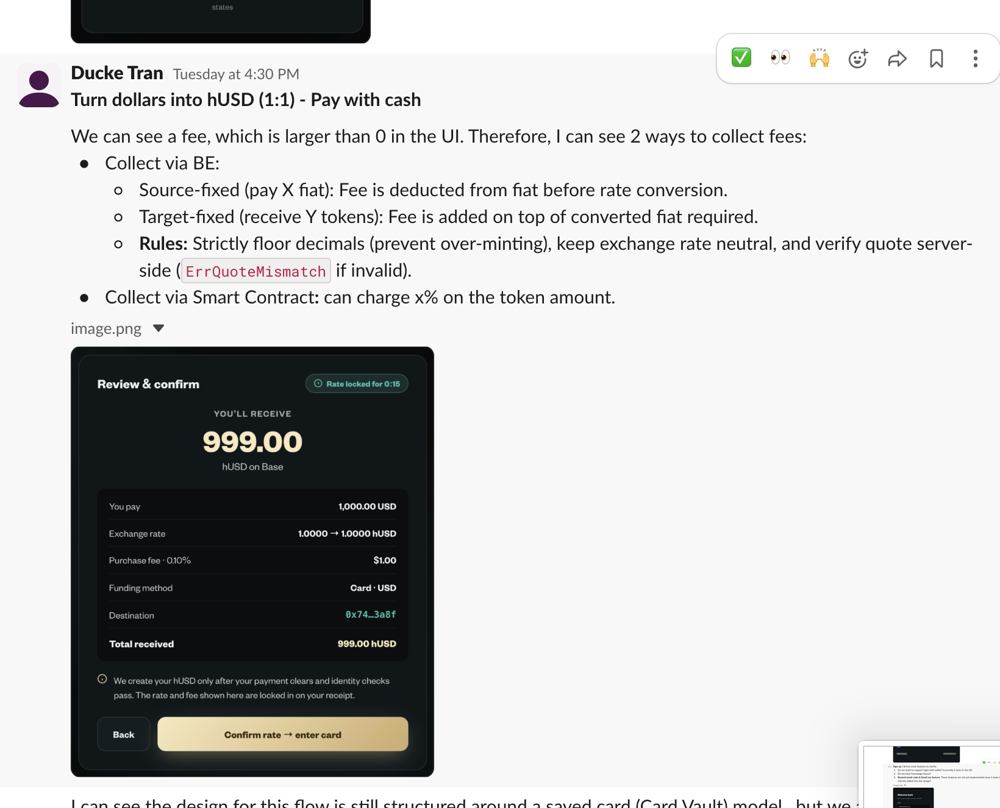
Feedback chi tiết
Fee > 0: **Collect via BE** — source-fixed (trừ fiat trước convert) vs target-fixed (cộng fiat); floor decimals, neutral rate, server **ErrQuoteMismatch**. Hoặc **Collect via SC** % on token. UI **Review & confirm**: 1000 USD → **999 hUSD**, fee 0.10% **$1**, rate lock timer.
Kết luận
BE đề xuất quote verification server-side; design giữ breakdown fee/min received rõ.
Card Vault → One-time guest checkout
Ai nói / nguồn: Ducke Tran
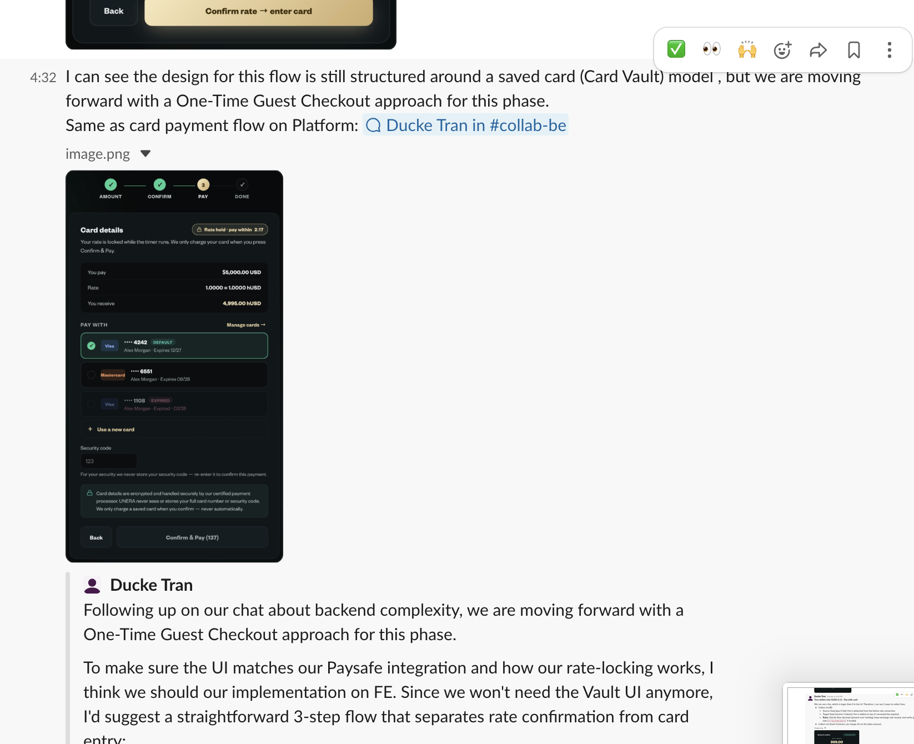
Feedback chi tiết
Design còn **Card Vault** (saved cards Alex Morgan) nhưng phase này dùng **One-Time Guest Checkout** (Paysafe, giống main platform). **Bỏ Vault UI**; flow **3 bước**: Enter Amount → **Review & Confirm (soft-lock)** → Card entry. `#collab-be` Jul 7.
Kết luận
FE đổi PAY step — không list saved cards; rate lock tách khỏi card entry.
Pay with crypto — FX vs 1:1 assumption
Ai nói / nguồn: Ducke Tran, Minh Nguyen Hoang
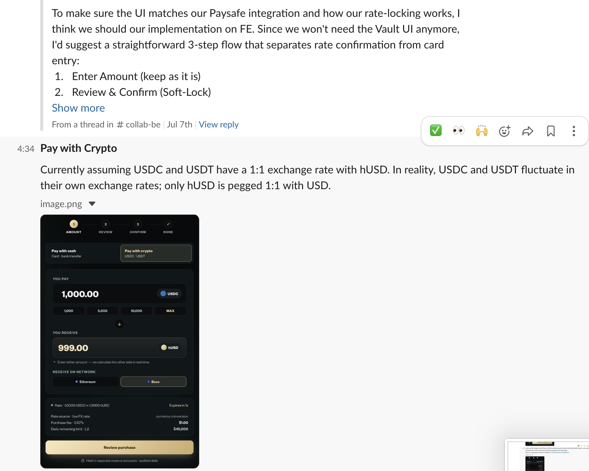
Feedback chi tiết
Design giả định **USDC/USDT = 1:1 hUSD** — thực tế chỉ **hUSD peg 1:1 USD**; USDC/USDT **biến động**. UI Amount: Pay with crypto tab, 1000 USDC → 999 hUSD, network Base, live FX, fee 0.10%, L2 limit $45k.
Kết luận
Copy/rate source phải phản ánh FX thật (CoinGecko/KuCoin), không hard-code 1:1 cho USDC/USDT.
Unique deposit address & edge cases
Ai nói / nguồn: Ducke Tran
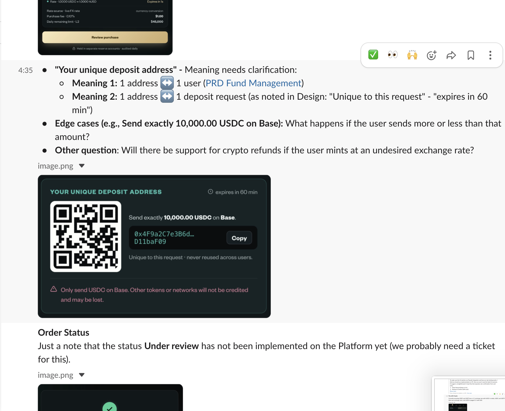
Feedback chi tiết
**Your unique deposit address:** nghĩa (1) 1 address ↔ 1 user (PRD Fund Mgmt) vs (2) 1 address ↔ **1 deposit request** (expires 60 min, unique request). Edge: user gửi **≠** exact amount? **Crypto refunds** nếu mint ở rate không mong muốn? Warning: only USDC on Base.
Kết luận
PM phải chốt semantic address + partial payment policy; design giữ expiry + network warning.
Order status — Under review chưa có trên Platform
Ai nói / nguồn: Ducke Tran

Feedback chi tiết
Status **Under review** (identity/safety) trong success tracker **chưa implement** trên Platform — cần ticket BE/FE.
Kết luận
Defer implementation; design prototype có thể giữ chip để grooming.
Success screen & links review (Ducke)
Ai nói / nguồn: Ducke Tran, Eric
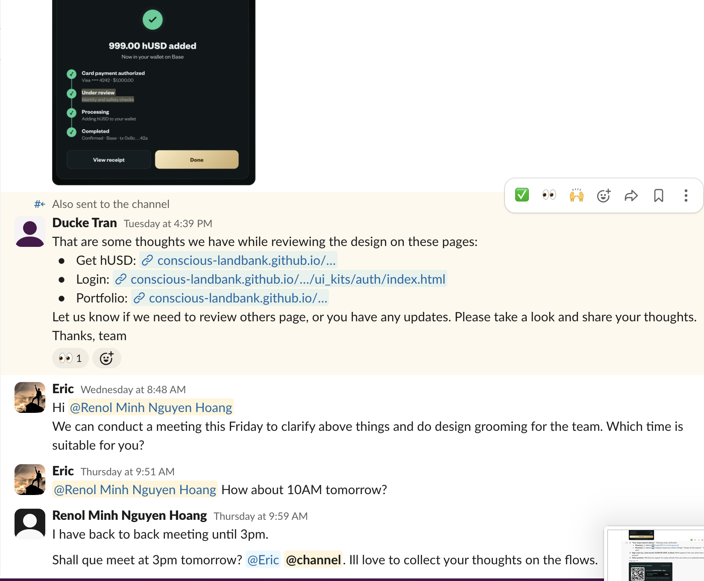
Feedback chi tiết
Success: **999 hUSD added**, steps Card authorized → **Under review** → Processing → Completed (Base tx). Ducke link **Get hUSD**, **Login auth kit**, **Portfolio**. **Eric:** họp Fri clarify designs; **Renol** đề xuất **3 PM** collect thoughts (thread Thu).
Kết luận
Buổi recording này = session collect thoughts 3 PM; action items gửi lại channel sau review.
Settings — Payment methods & expired card
Ai nói / nguồn: Minh Nguyen Hoang
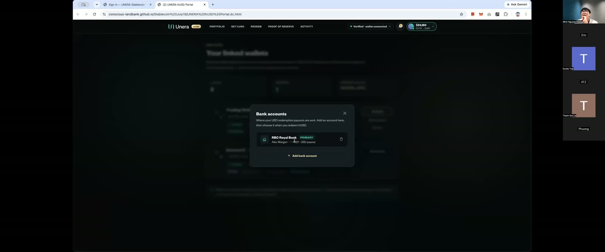
Feedback chi tiết
**Payment & payouts:** Card vault UI (Visa default, expired card warning, Set default). **Bank RBC 4821**. **Identity Level 2 Verified**. Lưu ý: mâu thuẫn với guest checkout — settings vẫn show vault cho phase sau?
Kết luận
Clarify vault chỉ post-MVP hoặc ẩn until Paysafe guest flow ships.
Get hUSD — Amount (bank transfer $1,000)
Ai nói / nguồn: Minh Nguyen Hoang

Feedback chi tiết
Flow **Get hUSD** step **AMOUNT**: Pay cash, Bank transfer USD, You pay **$1,000** → receive **999 hUSD**, network **Base**, rate 1:1 + expiry countdown, fee 0.10%.
Kết luận
Stepper Amount → Review → Confirm → Done; quote TTL cần refresh state (xem topic 19).
Get hUSD — Quote expired state
Ai nói / nguồn: Minh Nguyen Hoang
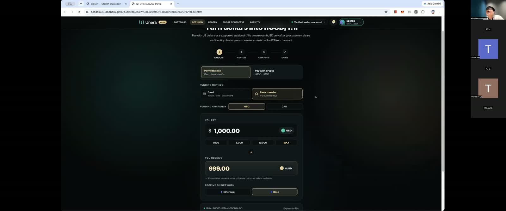
Feedback chi tiết
Cùng flow khi **Quote expired** — badge đỏ, CTA **Refresh quote** thay vì Continue. Rate lock UX khi hết hạn.
Kết luận
FE bắt buộc có expired + refresh — align Paysafe soft-lock.
Get hUSD — $5,000 bank transfer
Ai nói / nguồn: Minh Nguyen Hoang
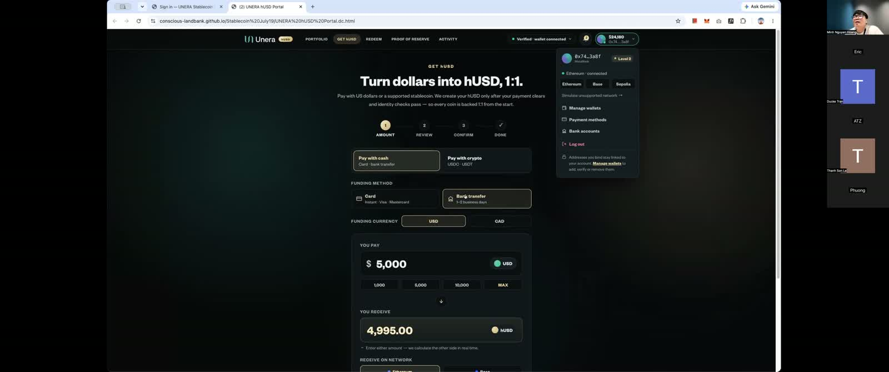
Feedback chi tiết
Amount **$5,000 USD** bank → **4,995 hUSD** (fee 0.10% implied). Copy: create hUSD after payment clears + identity checks.
Kết luận
Fee scale với amount — verify BE floor rules Ducke nêu.
Get hUSD — KYC in review + Connect wallet
Ai nói / nguồn: Minh Nguyen Hoang
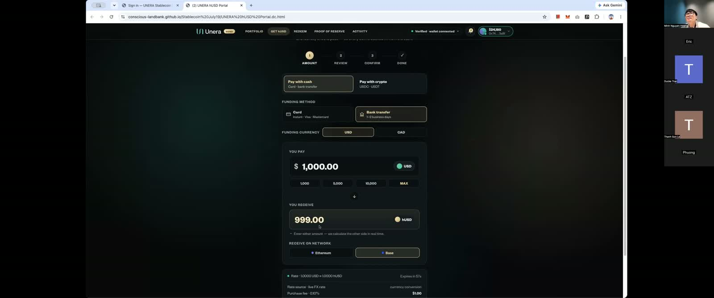
Feedback chi tiết
Nav state **KYC in review** (vàng) + **Connect wallet** — user vẫn xem form Get hUSD $1000 → 999 hUSD.
Kết luận
Gate issue/redeem theo level — inline status, không block read-only browse.
Redeem — Amount to bank (RBC)
Ai nói / nguồn: Minh Nguyen Hoang
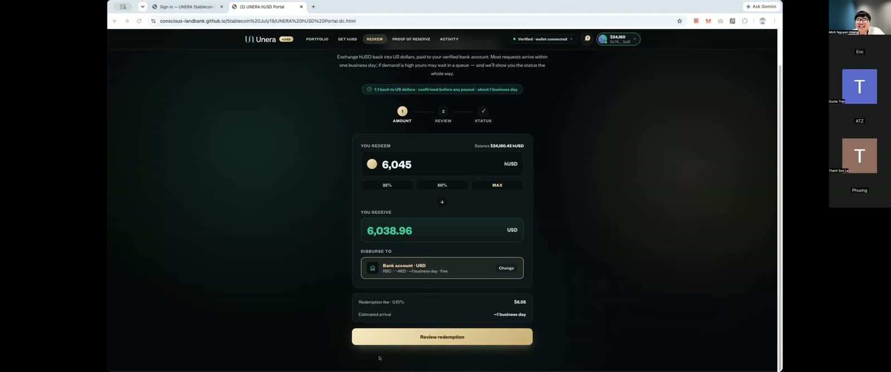
Feedback chi tiết
**REDEEM** step 1: **6,045 hUSD** → **6,038.96 USD**, disburse **RBC ···4821**, fee 0.10% **$6.05**, ~1 business day, **Review redemption**.
Kết luận
Redeem mirror Get — fee row + bank picker; queue copy khi demand cao.
Auth — Create account (Step 1 of 4)
Ai nói / nguồn: Minh Nguyen Hoang
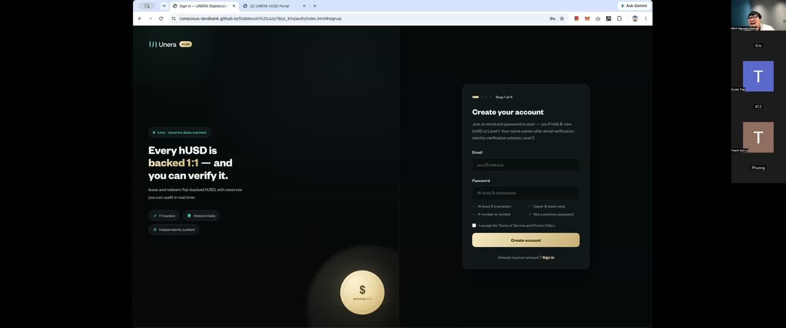
Feedback chi tiết
**Create your account** — email/password, Level 1 hold/view, Level 2 after identity. Marketing panel **Every hUSD backed 1:1** + trust chips.
Kết luận
Auth kit tách marketing left / form right — giữ WCAG password checklist.
Auth — Signed in Level 1 success
Ai nói / nguồn: Minh Nguyen Hoang
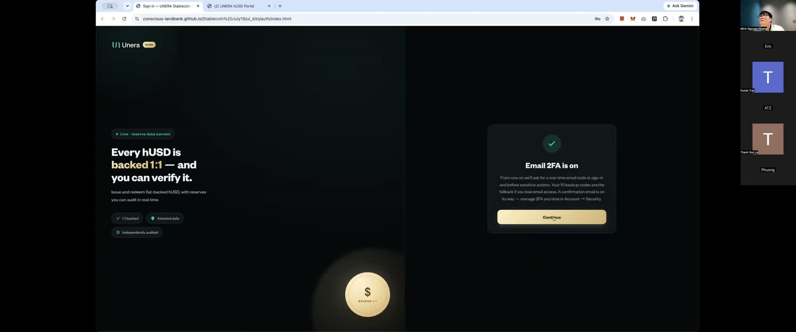
Feedback chi tiết
**You're in** — Level 1 hold/view; CTA **Go to dashboard**; links 2FA, session previews (idle/inactivity).
Kết luận
Post-login routing → Portfolio; Level gating copy nhất quán dashboard.
Portfolio walkthrough + Slack balance doc
Ai nói / nguồn: Minh Nguyen Hoang, Eric
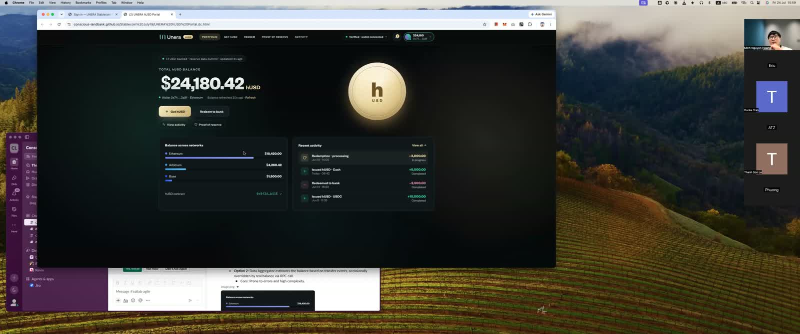
Feedback chi tiết
Minh scroll **Portfolio** đồng thời mở doc Slack **Balance across networks / BE options** — thảo luận align UI với backend mechanism.
Kết luận
Design giữ breakdown card; chờ BE chọn API vs aggregator.
Get hUSD — Pay with crypto (USDT, KuCoin rate)
Ai nói / nguồn: Minh Nguyen Hoang
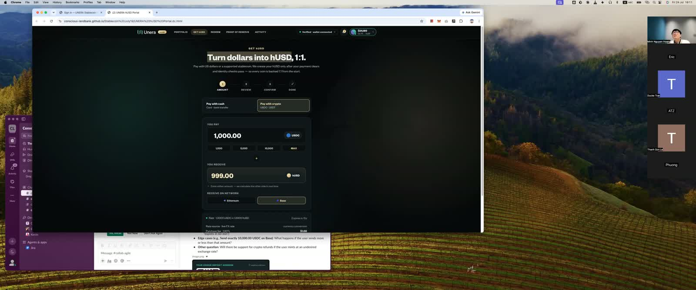
Feedback chi tiết
**Pay with crypto** 1000 **USDT** → 999 hUSD, Base, rate source **KuCoin**, fee 0.10%, **Review purchase**.
Kết luận
Rate source label phải đúng provider — không generic “live FX” khi BE chỉ định KuCoin.
Review & confirm — crypto deposit + mint CTA
Ai nói / nguồn: Minh Nguyen Hoang
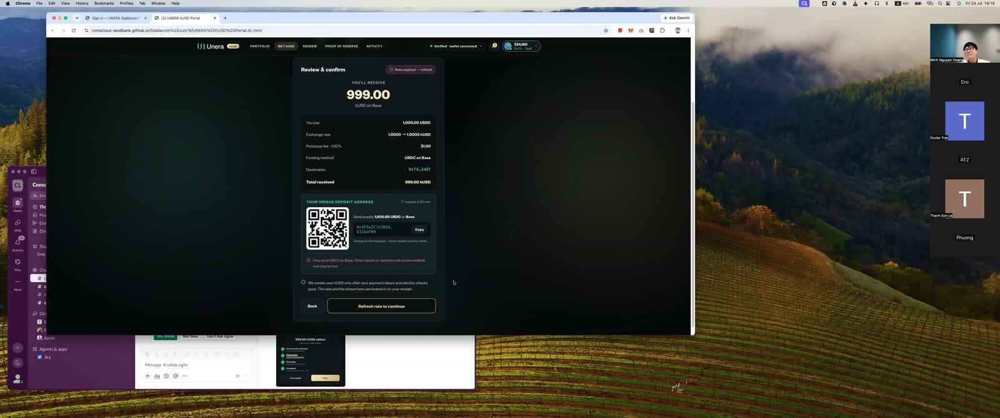
Feedback chi tiết
**Review & confirm** pay **1000 USDC**, receive 999 hUSD, **unique deposit address** QR, send exact amount, **Confirm & mint**, rate locked 0:44.
Kết luận
Mint terminology — align Eric prior rule **Purchase** not mint on user copy (open align marketing vs dev portal).
Kết thúc buổi họp
Ai nói / nguồn: Minh Nguyen Hoang, Eric, Thanh Son Le
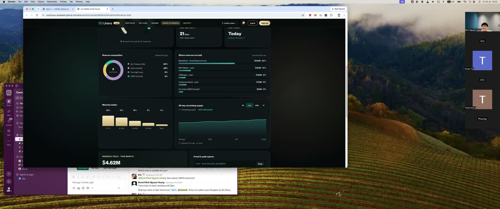
Feedback chi tiết
Quay lại gallery participant — wrap up collect thoughts, follow-up async trên Slack/Jira.
Kết luận
Ghi nhận feedback chi tiết trong report này; implement theo priority PM sau grooming.
Bảng tóm tắt quyết định / hành động
| Chủ đề | Kết luận / hành động | Owner (nguồn) | Priority |
|---|---|---|---|
| Mở đầu buổi grooming Stablecoin portal | Mục tiêu buổi: làm rõ design grooming trước khi implement; không chốt BE trong call này nhưng ghi nhận câu hỏi mở cho PM/BE. | Eric, Minh Nguyen Hoang, Thanh Son Le, Phuong, ATZ | — |
| Proof of Reserve — liquidity & reserve backing | Trang minh bạch dự trữ — giữ narrative 1:1 + audit; team dùng làm reference copy/IA cho production portal. | Minh Nguyen Hoang | — |
| Your linked wallets & nav account menu | Multi-wallet + verify-by-signature pattern được demo; pending verification state cần copy/CTA rõ trước khi user Get/Redeem. | Minh Nguyen Hoang | — |
| Proof of Reserve — charts & contract proof | Marketing/trust layer đầy đủ — FE chỉ presentation; số liệu mock trên prototype. | Minh Nguyen Hoang | — |
| Portfolio — Kevin Slack: status bar & wallet row | Design action: chỉnh hero portfolio — bỏ 1:1 chip top, thêm freshness trên balance, đa chain copy address, terminology rates theo asset type. | Kevin, Minh Nguyen Hoang | — |
| Portfolio live demo (trước chỉnh Kevin) | Đối chiếu trực tipe với feedback Kevin — các điểm đỏ trên mock Slack map đúng UI hiện tại. | Minh Nguyen Hoang | — |
| Eric Slack — final portal review request | Buổi 24 Jul là follow-up grooming Eric đề xuất (Thu/Fri) sau thread này. | Eric | — |
| BE review — Balance number & refresh (Ducke) | Mở câu hỏi PRD: single network vs aggregated — chưa chốt trong video; FE có thể mock cả hai state. | Ducke Tran | — |
| Balance across networks — contract & BE options | Cần PM/BE quyết định nguồn số liệu trước khi polish refresh UX; design giữ component breakdown. | Ducke Tran | — |
| Sign up / Sign in — PRD gaps | Align PRD vs design auth kit trước sprint; wallet-login và homepage là open questions. | Ducke Tran, Minh Nguyen Hoang | — |
| Get hUSD — Pay with cash: fee collection (Ducke) | BE đề xuất quote verification server-side; design giữ breakdown fee/min received rõ. | Ducke Tran | — |
| Card Vault → One-time guest checkout | FE đổi PAY step — không list saved cards; rate lock tách khỏi card entry. | Ducke Tran | — |
| Pay with crypto — FX vs 1:1 assumption | Copy/rate source phải phản ánh FX thật (CoinGecko/KuCoin), không hard-code 1:1 cho USDC/USDT. | Ducke Tran, Minh Nguyen Hoang | — |
| Unique deposit address & edge cases | PM phải chốt semantic address + partial payment policy; design giữ expiry + network warning. | Ducke Tran | — |
| Order status — Under review chưa có trên Platform | Defer implementation; design prototype có thể giữ chip để grooming. | Ducke Tran | — |
| Success screen & links review (Ducke) | Buổi recording này = session collect thoughts 3 PM; action items gửi lại channel sau review. | Ducke Tran, Eric | — |
| Settings — Payment methods & expired card | Clarify vault chỉ post-MVP hoặc ẩn until Paysafe guest flow ships. | Minh Nguyen Hoang | — |
| Get hUSD — Amount (bank transfer $1,000) | Stepper Amount → Review → Confirm → Done; quote TTL cần refresh state (xem topic 19). | Minh Nguyen Hoang | — |
| Get hUSD — Quote expired state | FE bắt buộc có expired + refresh — align Paysafe soft-lock. | Minh Nguyen Hoang | — |
| Get hUSD — $5,000 bank transfer | Fee scale với amount — verify BE floor rules Ducke nêu. | Minh Nguyen Hoang | — |
| Get hUSD — KYC in review + Connect wallet | Gate issue/redeem theo level — inline status, không block read-only browse. | Minh Nguyen Hoang | — |
| Redeem — Amount to bank (RBC) | Redeem mirror Get — fee row + bank picker; queue copy khi demand cao. | Minh Nguyen Hoang | — |
| Auth — Create account (Step 1 of 4) | Auth kit tách marketing left / form right — giữ WCAG password checklist. | Minh Nguyen Hoang | — |
| Auth — Signed in Level 1 success | Post-login routing → Portfolio; Level gating copy nhất quán dashboard. | Minh Nguyen Hoang | — |
| Portfolio walkthrough + Slack balance doc | Design giữ breakdown card; chờ BE chọn API vs aggregator. | Minh Nguyen Hoang, Eric | — |
| Get hUSD — Pay with crypto (USDT, KuCoin rate) | Rate source label phải đúng provider — không generic “live FX” khi BE chỉ định KuCoin. | Minh Nguyen Hoang | — |
| Review & confirm — crypto deposit + mint CTA | Mint terminology — align Eric prior rule **Purchase** not mint on user copy (open align marketing vs dev portal). | Minh Nguyen Hoang | — |
| Kết thúc buổi họp | Ghi nhận feedback chi tiết trong report này; implement theo priority PM sau grooming. | Minh Nguyen Hoang, Eric, Thanh Son Le | — |
Transcript audio đầy đủ: transcript-vi.md